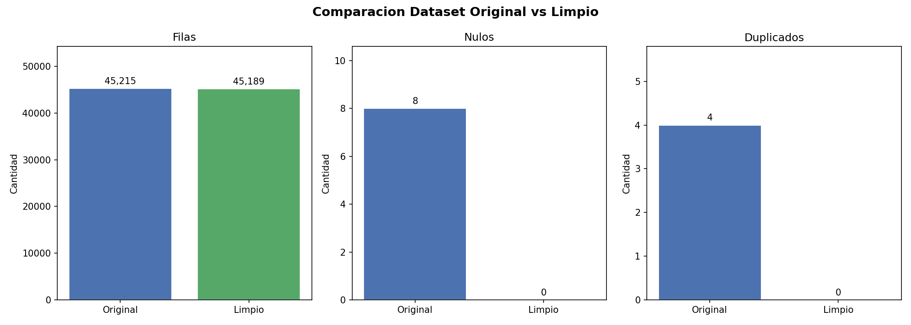
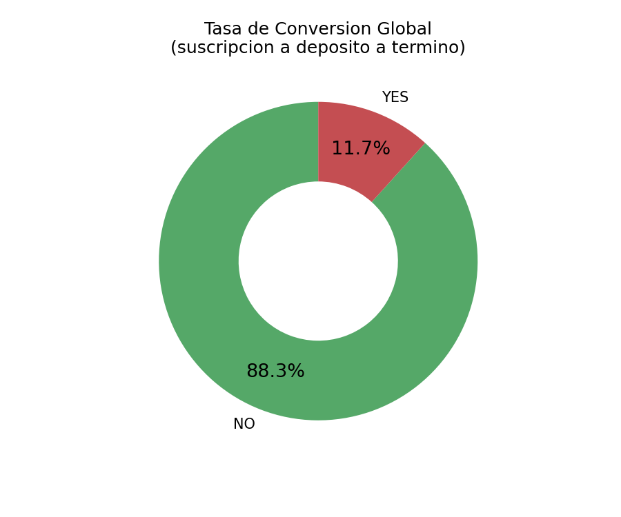
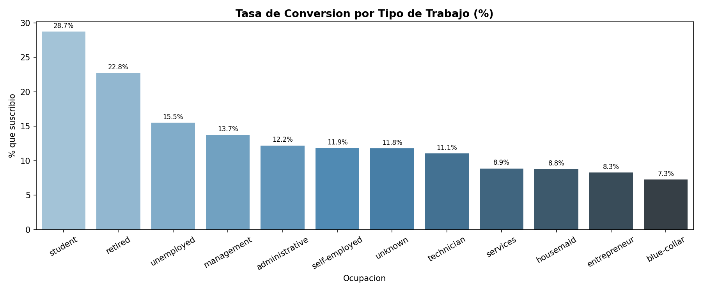
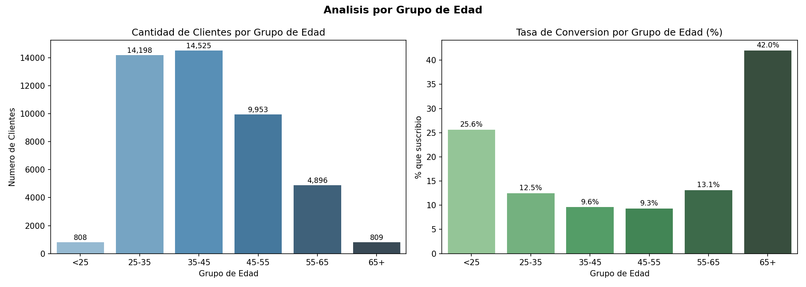
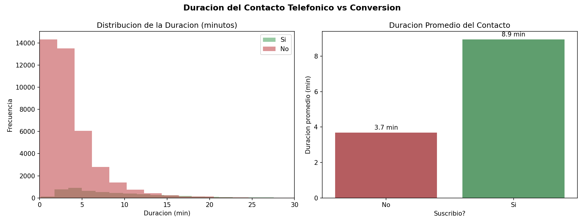
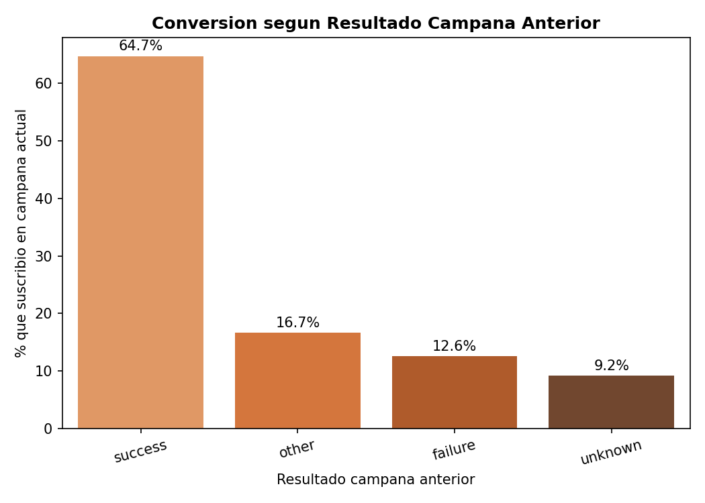
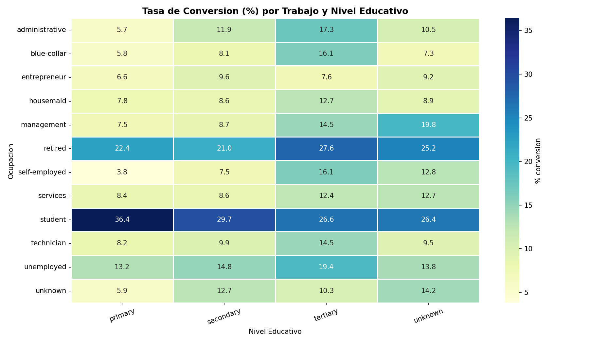

Un banco llamo por telefono a mas de 45,000 clientes para ofrecerles abrir un deposito a termino fijo: el cliente guarda su dinero en el banco durante un periodo acordado (por ejemplo, un ano) y al finalizar recibe ese dinero de vuelta junto con una ganancia (interes). Analizamos quienes dijeron SI y que caracteristicas tienen en comun.
El banco queria responder una pregunta sencilla: de todos los clientes a los que llamamos, ¿quien tiene mas probabilidades de decir SI? Suscribirse significa que el cliente acepto abrir el deposito y firmo el contrato. Identificar ese perfil permite enfocar la proxima campana en las personas correctas, en lugar de llamar a todos por igual y desperdiciar tiempo y recursos.
Antes de analizar los datos fue necesario corregir errores e inconsistencias en el archivo original: informacion faltante, registros repetidos, edades imposibles y nombres escritos de formas distintas para referirse a lo mismo. Este paso garantiza que las conclusiones sean confiables y no esten distorsionadas por datos incorrectos.
| # | Etapa | Accion | Resultado | Tipo |
|---|---|---|---|---|
| 4.1 | Datos faltantes | dropna() — eliminar filas con celdas vacias |
8 celdas nulas eliminadas | Nulos |
| 4.2 | Columnas irrelevantes | Verificar que cada columna tenga mas de 1 nivel o valor unico | Todas las columnas preservadas | Estructura |
| 4.3 | Filas duplicadas | drop_duplicates() |
4 filas duplicadas eliminadas | Duplicados |
| 4.4 | Outliers | Filtrar: age > 100, duration < 0, previous > 100 | 14 registros anomalos eliminados | Outliers |
| 4.5 | Errores tipograficos | Unificar: admin./administrative, div./divorced, sec./secondary, phone/telephone, unk/unknown | Niveles reducidos: job 18→12, marital 6→3, contact 5→3 | Categoricas |
Total de registros (filas), celdas sin informacion (nulos) y registros repetidos antes y despues de la limpieza. Cuanto mas parecidas sean las barras, menos errores habia en los datos originales.

De cada 100 personas a las que el banco llamo, solo 11 terminaron abriendo el deposito. Eso significa que el 88.3% de las llamadas no resultaron en una suscripcion. Por eso es tan importante saber a quien llamar: no tiene sentido invertir el mismo esfuerzo en todos si algunos perfiles casi nunca dicen SI.
Proporcion de clientes que abrieron el deposito (SI, verde) versus los que rechazaron la oferta (NO, rojo). La diferencia es enorme: hay casi 8 veces mas rechazos que aceptaciones.

De cada 100 clientes contactados segun su ocupacion, cuantos terminaron abriendo el deposito. Las barras mas altas indican los trabajos donde el banco tuvo mas exito.

La edad revela un patron muy claro: los mas jovenes y los mas mayores dicen SI con mucha mas frecuencia que las personas en plena vida laboral (35 a 55 anos). Curiosamente, el grupo que mas llaman (35-55) es justo el que menos acepta. Esto sugiere que la etapa de vida influye directamente en la disposicion a ahorrar de esta forma.
El grafico de la izquierda muestra cuantas personas de cada grupo de edad fueron contactadas. El de la derecha muestra que porcentaje de cada grupo termino suscribiendose. Comparar ambos revela que llamar a mas personas de un grupo no significa obtener mas suscripciones.

Dos senales muy claras predicen si un cliente va a decir SI: cuanto tiempo dura la llamada telefonica y si ese mismo cliente ya habia aceptado una oferta similar del banco en el pasado. Ambos factores son de los mas poderosos que encontramos en todo el analisis.
El histograma (izquierda) muestra cuanto duran las llamadas en minutos segun si el cliente dijo SI o NO. La barra (derecha) compara el tiempo promedio de cada grupo. Una llamada larga indica que el cliente esta escuchando, haciendo preguntas y considerando la oferta.

Muestra cuantos clientes suscribieron en la campana actual segun lo que habia pasado cuando el banco los llamo por primera vez en el pasado. "Success" significa que ya habian dicho SI antes; "failure" que dijeron NO; "unknown" que no habia registro previo.

Saber solo el trabajo o solo el nivel de estudios de un cliente no es suficiente: la combinacion de ambos revela perfiles mucho mas precisos. Por ejemplo, no es lo mismo un estudiante con estudios universitarios que uno con estudios primarios; su situacion economica y sus habitos financieros pueden ser completamente distintos.
Cada celda representa una combinacion de ocupacion (filas) y nivel de estudios (columnas), y muestra que porcentaje de ese grupo especifico suscribio. Cuanto mas oscura la celda, mayor fue la tasa de conversion en esa combinacion. Las celdas en blanco o muy claras indican grupos con muy baja conversion o pocos datos.

Combinando todo lo que encontramos, este es el tipo de cliente al que tiene mas sentido llamar primero en la proxima campana. No significa que los demas no puedan suscribirse, sino que estas caracteristicas se repiten con mayor frecuencia entre quienes dijeron SI. Cuantos mas de estos rasgos tenga un cliente, mayor es su probabilidad de aceptar.